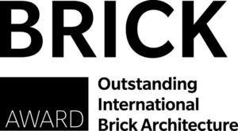

Trade Mark Journal No.2026/006 6 February 2026
WO0000001885549 (19,37,41)
Office of origin: European Union Intellectual Property Office (EUIPO)
Date of International Registration:22 September 2025
Date of designation in the UK:
22 September 2025

International priority date claimed: 24 March 2025
(European Union Intellectual Property Office (EUIPO))
(019161222)
- Class 19
- Building and construction materials and elements made of sand, stone, rock, clay, minerals and concrete; stone, rock, clay and minerals; bricks; unfired bricks; refractory products in the form of bricks; earth for bricks; masonry blocks; coping stones; building bricks (non-metallic -); wall stone; stones; earthenware tiles; quarry tiles; stone roofing tiles; building stone; roofing tiles, not of metal; tarred roofing paper; asphalt roofing felt; asphalt roofing paper; pantiles, not of metal; roof gutters, not of metal; scantlings [carpentry]; roofing slates; roofing shingles; roof coverings, not of metal; chimney pots, not of metal; chimney cowls, not of metal; stack linings (non-metallic -); chimneys, not of metal; bituminous coatings for roofing; roof flashing, not of metal; roofing, not of metal; roofing underlayment; facade elements of non-metallic materials; facade construction components of non-metallic materials; cladding (non-metallic -) for facades; building fronts (non-metallic -); non-metallic building facade elements; non-metallic facing tiles for use in buildings; roofing, not of metal, incorporating photovoltaic cells; facades of non-metallic materials; roofing fabrics; roofing plate (non-metallic -); fireproof seals in the nature of building materials; roofing paper; dormer vents (non-metallic -).
- Class 37
- Construction; building repair; custom construction of buildings; construction of complexes for business; installation of photovoltaic cells and modules; installation and maintenance of photovoltaic installations; roofing services; roofing installation; resurfacing of roofs; house building; construction consultancy; renovation of buildings; maintenance of buildings; building maintenance and repair; infrastructure construction.
- Class 41
- Organization of competitions; arranging of award ceremonies; arranging and conducting award ceremonies; organisation of competitions and awards.
Wienerberger AG
Representative: ANWÄLTE BURGER UND PARTNER RECHTSANWALT GMBH, Rosenauerweg 16, A-4580 Windischgarsten, AUSTRIA